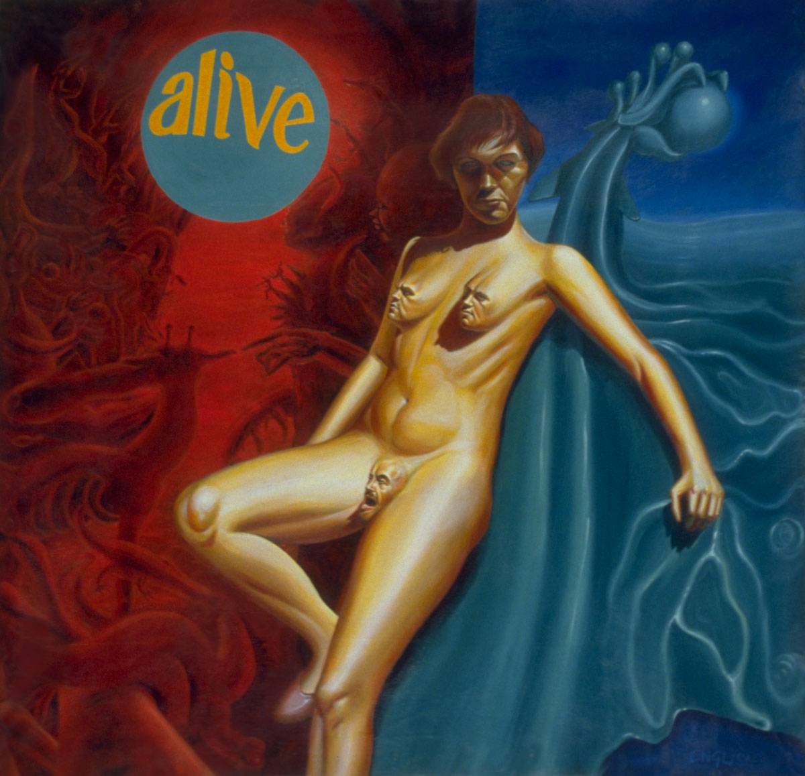

Notes
Popaganda: The Art & Subversion of Ron English identifies the medium as oil on canvas. The present catalogue record identifies the work as acrylic on unstretched canvas.
Literature
Ron English, Popaganda: The Art & Subversion of Ron English (San Francisco: Last Gasp, 2001), p. 64. ISBN 1-887128-60-3.
Exhibitions
Fashion Moda presents Omniscient Abandon, Fashion Moda, New York, New York, US, December 12, 1986–January 15, 1987.